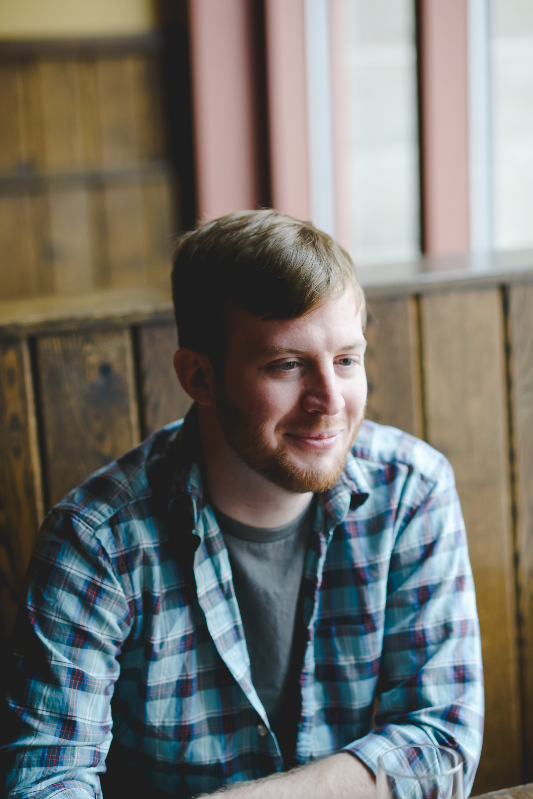
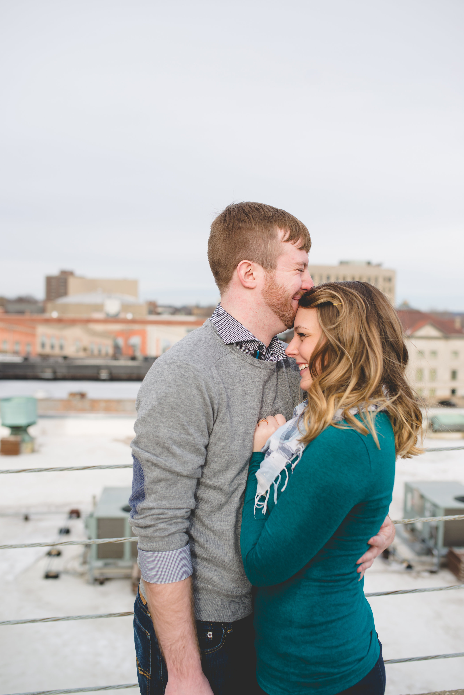

Also known as Luk@$, Luke is a software developer in Downtown Detroit creating the hottest software of 2016. Seriously, it’s straight fire. Things Luke enjoys: a neat glass of whiskey, a well built PC, and exploring downtown. Things Luke doesn’t really like: snow, heights, oceans, and driving. Pretty comprehensive list, everything else falls in the middle somewhere.
Britta was born July 24, 1991 to parents Tad and Susan Rodenbeck. She grew up in Rockford, Illinois aside from a six-month hiatus living in Celebration, Florida. Britta graduated from Auburn High School in May of 2009. After spending a year in Minneapolis at the University of Minnesota—Go Gophers!—she graduated from Rock Valley College and then Northern Illinois University a few years later in 2014 with a degree in adolescent psychology. Britta loves simple things like a really good cup of coffee, the three minutes a day her cat cuddles with her, and a week with only tacos on the dinner menu. It is Britta’s goal in life to own a farm so that she can grow her own food and tend to a bunch of pigs and chickens. Be on the lookout for Britta’s taco food truck in the near future, BritTACOS*.
*name still in workshop
It all began with a service organization. The older members get an opportunity to mentor the pledging members through their first semester, and Britta was paired up with Luke. Their first event together was a seminar on education hosted by the local high school. After the event, they went to Taco Bell for some glorious quesadillas, and their best friendship started. Through a couple Catalina Wine Mixers and someone rolling their ankle in a drunken mess, their friendship slowly morphed into something more. After two years, Luke asked Britta on a date: Chili's, wine, and a movie. A few weeks later, they fell in love. Through some cohabitation and an out-of-state move, Luke asked Britta to marry him with some gourmet chocolates.
